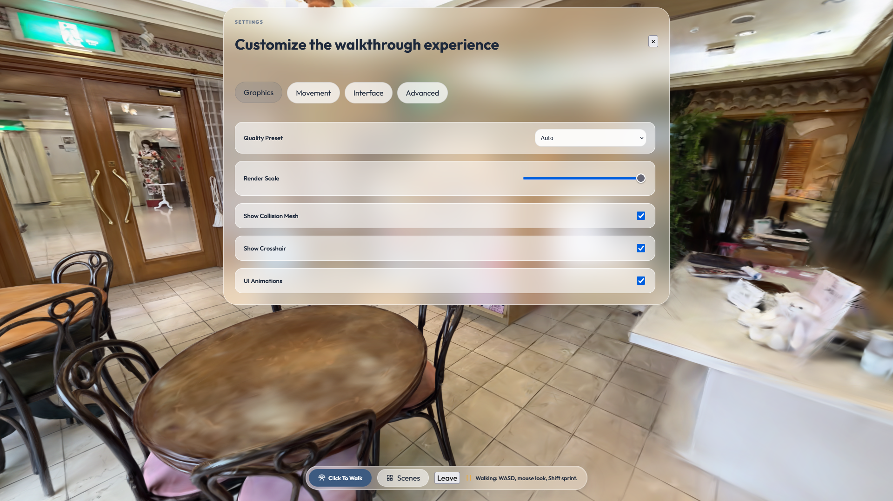
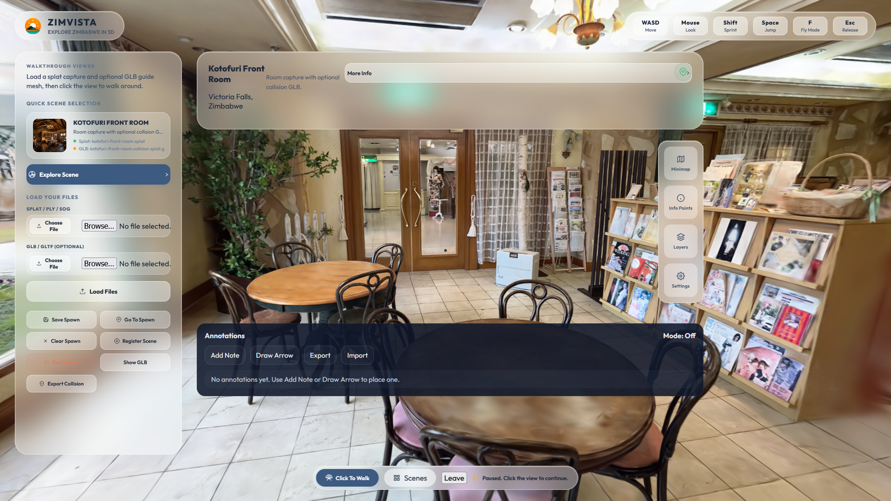
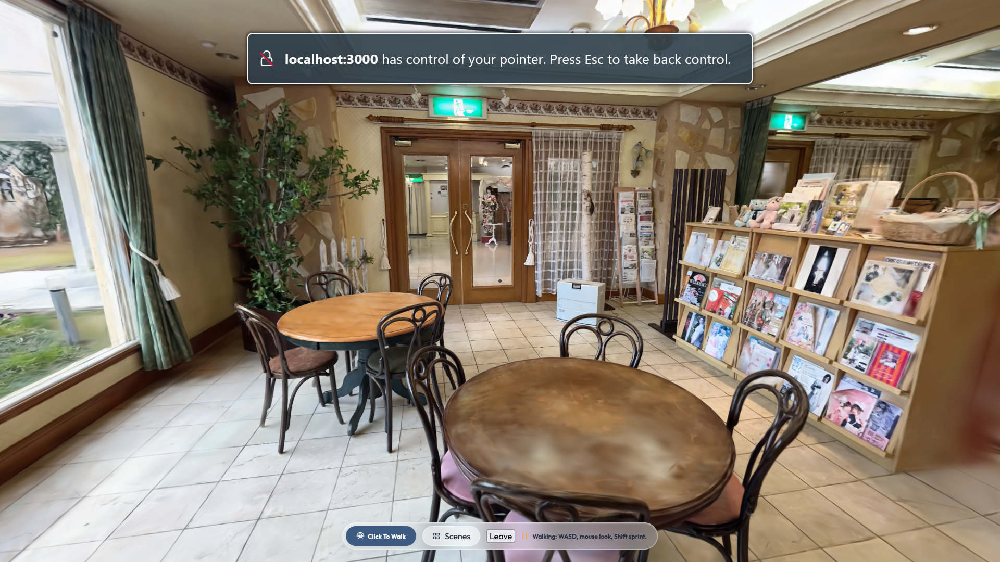
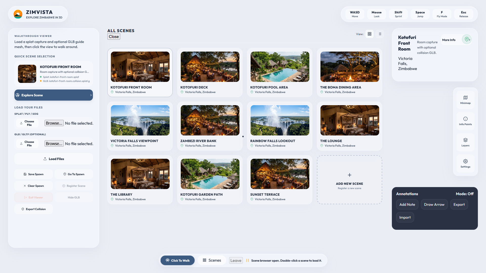
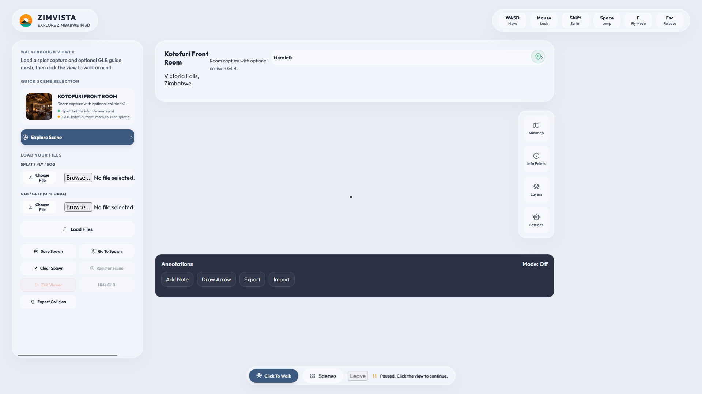
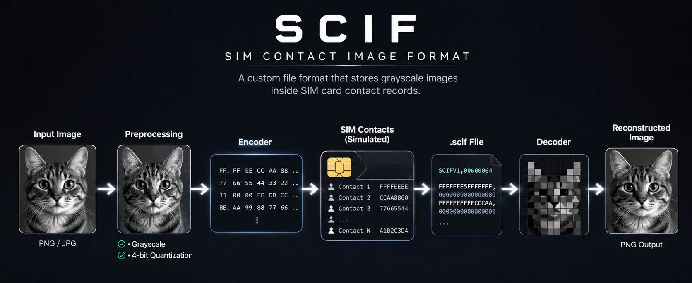
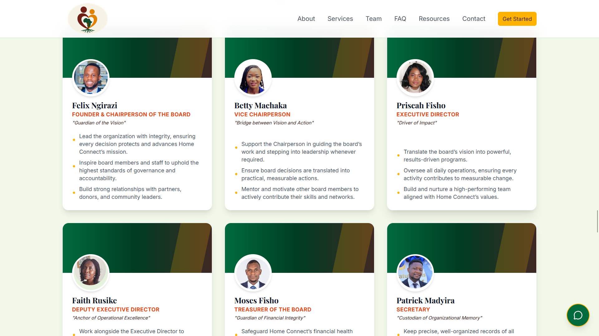
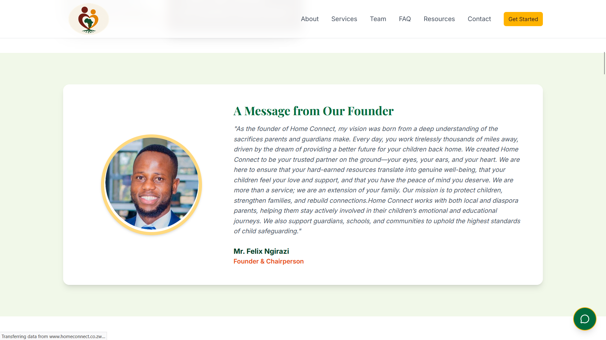
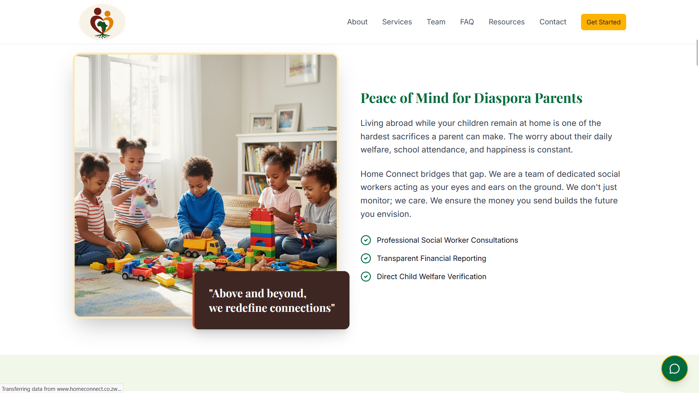
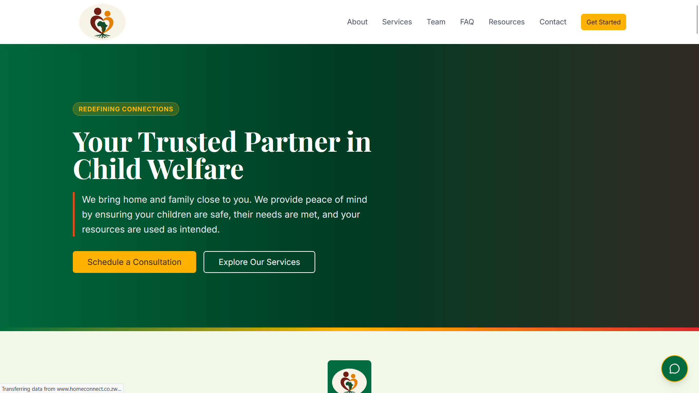

Munyaradzi
Mzite
Software Developer
Computer Graphics • AI • Computer Vision
preyzmunya@gmail.com
About Me
I'm a Software Developer and BSc Computer Science graduate from Africa University with a passion for building software at the intersection of Computer Graphics, Artificial Intelligence, and Computer Vision. I enjoy developing systems that combine strong engineering with immersive visual experiences, from AI-powered accessibility tools to interactive 3D applications.
My current interests include 3D Gaussian Splatting (3DGS), photogrammetry, physically based rendering (PBR), real-time graphics, machine learning, and computer vision. I enjoy researching emerging graphics technologies and experimenting with rendering pipelines, digital twins, and interactive visualization for the web.
Whether I'm developing enterprise software, AI-powered tools, or real-time graphics experiences, I'm driven by solving challenging technical problems while continually exploring new technologies and creative ways to apply them.
 Java
Java Spring Boot
Spring Boot Python
Python C#
C# TypeScript
TypeScript Three.js
Three.js OpenCV
OpenCV Blender
Blender Unreal Engine
Unreal EngineFeatured Programming Projects
Braille-Eyes (Co-founder & Lead Developer)
Braille Eyes is an AI-powered wearable navigation system designed to help visually impaired people move confidently through unfamiliar environments. Using computer vision, depth estimation and real-time object detection, the system identifies nearby obstacles and communicates their location through spatial audio, allowing users to understand their surroundings without relying solely on a white cane.
- Built the real-time obstacle detection pipeline using Python and OpenCV running on a Raspberry Pi.
- Integrated monocular depth estimation to improve obstacle awareness and distance perception.
- Developed a spatial audio feedback system to provide intuitive navigation cues.
- Awarded 2nd Place at the POTRAZ 4IR Innovation Expo and featured on ZBC National News and Diamond FM.
PythonOpenCV Raspberry Pi
Raspberry Pi
Press Highlight
AU Students Unveil AI-Powered Braille-Eyes to help the Blind


 BlenderUnreal EngineThree.js
BlenderUnreal EngineThree.js- Built real-time object detection and obstacle avoidance using Python, OpenCV, and MiDAS on a Raspberry Pi 5.
- Won 2nd place at POTRAZ 2025 4IR Innovation Competition.
- Featured on ZBC National News and Diamond FM.
ZimVista (3D Digital Twin Platform)
ZimVista is an immersive 3D Digital Twin platform that transforms ordinary smartphone captures into interactive, photorealistic environments using Gaussian Splatting (3DGS) and photogrammetry. Instead of relying on static photographs or traditional virtual tours, users can freely explore reconstructed real-world spaces with natural depth and parallax directly in the browser.
The project explores how modern reconstruction techniques can create accessible digital twins for universities, hotels, museums, tourism, retail, real estate, and other physical spaces. My long-term goal is to make immersive 3D exploration possible using everyday devices and modern web technologies.
BlenderThree.jsUnreal Engine





- Developed a workflow that converts ordinary smartphone captures into photorealistic Gaussian Splat environments.
- Built an interactive web viewer for exploring reconstructed spaces with natural depth and parallax.
- Researched photogrammetry, Gaussian Splatting (3DGS), and digital twin workflows for real-world environments.
- Explored applications in tourism, education, hospitality, cultural preservation, retail, and real estate visualization.
- Currently extending the platform with PlayCanvas to create immersive real-time web experiences.
SCIF (SIM Contact Image Format)
SCIF is an experimental file format that demonstrates how grayscale image data can be stored inside SIM card contact records. I made this project as a hack to prove that images can be stored in constrained storage systems like SIM cards, which are typically reserved for phonebook entries. The project explores constrained storage systems, custom file format design, and data serialization by implementing a complete encoding, decoding, verification, and reconstruction pipeline.
Using this approach I can store a 64x64 grayscale image in a sim card's contact storage, which is typically reserved for phonebook entries.

- Designed a custom .scif image file format from scratch.
- Built a complete encoder and decoder for grayscale image reconstruction.
- Simulated SIM card contact storage using fixed-length contact records.
- Implemented verification tools to ensure reconstruction integrity.
- Generated storage statistics including SIM usage and contact allocation.
- Released the first stable version (SCIF v1) as an open-source project.
PythonHomeConnect (Diaspora Child Welfare Platform)
HomeConnect is a social impact platform designed to support Zimbabwean families separated by migration. The platform helps parents living abroad monitor the wellbeing of children left in the care of relatives while ensuring financial support reaches its intended purpose. Through collaboration with social workers, guardians, and parents, HomeConnect improves transparency, accountability, and communication, ensuring children receive the support they need despite geographical separation.






 JavaSpring BootTypeScript
JavaSpring BootTypeScript- Supports children whose parents are working outside Zimbabwe.
- Tracks welfare reports and living conditions through social worker assessments.
- Provides accountability and transparency for remitted funds.
- Enables communication between parents, guardians, and support personnel.
- Strengthens family connections despite geographical separation.
Computer Graphics
Blender InkscapeUnreal Engine
InkscapeUnreal EngineCommercial Work
Selected commercial animations and product visualizations created for brands and organizations, focusing on cinematic lighting, product presentation, motion design and visual storytelling.


Personal Projects & Animation
Personal animation and rendering projects exploring storytelling, character animation, lighting, materials, cinematography and stylized visual design in Blender.


Graphics Research
My current research explores modern computer graphics beyond traditional animation, with a particular interest in Gaussian Splatting (3DGS), photogrammetry, neural rendering, physically based rendering (PBR), depth estimation, real-time rendering, interactive web graphics, camera and lens simulation, and AI-assisted graphics workflows. I'm currently building interactive Gaussian Splat experiences for the web using PlayCanvas while exploring digital twins and immersive visualization.
Professional Experience
Software Developer Intern
NetOne Cellular Private Limited
- Developing telecommunications solutions using Java, Python, and Three.js.
- Working with cloud infrastructure and backend systems.
Education & Certificates
B.Sc Computer Science
Africa University (CGPA 3.54)
- Introduction to Cybersecurity (Cisco)
- Java for Beginners (Udemy)
- Building with Artificial Intelligence (Saylor)
- Introduction to Python (Saylor)
- Information Security (Cisco)